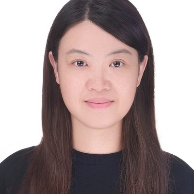

EMBEDDED SYSTEMS · OPEN SOURCE · TECHNOLOGY

Bonnie Lo
羅巧珊
Technical Manager
JMicron Technology Corporation · Taiwan
Keep in touch. Save my contact details to your phone.
Embedded LinuxOpenBMCZephyr
CONNECT
Professional connections
Connect with me to talk about embedded Linux, OpenBMC and Zephyr.
COMPANY
About JMicron
Founded in 2001 and based in Hsinchu, Taiwan, JMicron Technology Corporation is a fabless semiconductor design company specializing in high-speed interface bridge controllers, including USB, PCIe, SATA and UFS technologies for storage connectivity.
Source: JMicron company overview ↗
MENTORSHIP
Career conversations
Explore my career mentorship profile on 大大帶我飛.
KEEP IN TOUCH
A contact worth keeping
Open the contact card and use your phone’s contact app to save it. You can always return to this page through the QR code.
Your phone camera will offer to add me to your contacts directly.
Open QR image ↗

Based in Taiwan